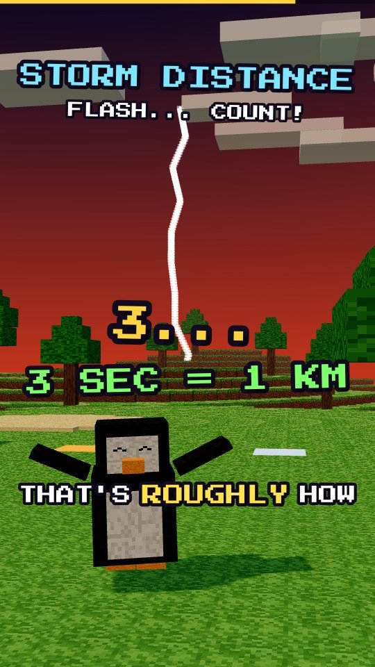

Pip is a blocky penguin who explains science in under a minute: space, physics, nature and fun "what if" questions. New short videos are published regularly on YouTube (@Pengee30), Facebook and TikTok, in English and Indonesian.
This website belongs to the creator of the Pip channel. It describes the small tool we use to publish our own videos to our own accounts through the official YouTube, Facebook and TikTok APIs. Every video is reviewed and approved by the creator before it is published.
The tool is not offered to the public, has no user accounts and is not used by anyone else.